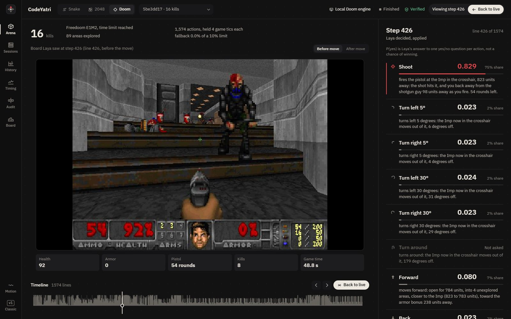

Technical notes
Adarsh Singh
I build AI systems whose decisions can be read, checked and replayed, and I write up how they work, including what failed.
Writing
JPMorganChase Code for Good 2026: Every Stage, From Application to Internship Offer
Eligibility, the coding test, the HireVue interview, the 24-hour hackathon and the offer. Every stage of JPMorganChase's Software Engineer Program selection, written for anyone applying for the first time.

I Taught a Small AI to Play Doom With Yes-or-No Questions
How I turned the Doom engine into plain sentences, built a 64,248-question dataset from written priorities, and fine-tuned a 421-million-parameter model until it beat the rules that trained it.
Projects
Laya arena: every decision, replayable
The dashboard I built to watch Laya play, with my recorded games: 16 kills in Doom, four 1,000-point Snake wins and a 2048 game to the 512 tile. Step through any move, read Laya's yes/no answer for each action, and let your browser re-check the whole log.